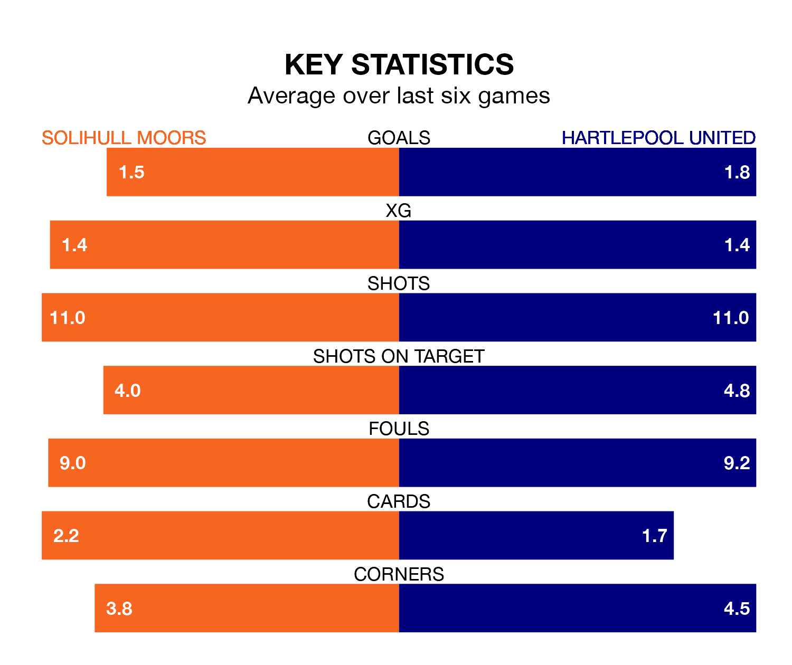

Hartlepool United face Solihull Moors on Saturday seeking to protect their long unbeaten run in the National League.
Pools are unbeaten in five, with four wins and one draw, ahead of the 3pm kick-off.
They face a Solihull Moors team who have won two and drawn two over the same number of games.
In the last 10 years, Solihull Moors and Hartlepool have played each other on 11 occasions. Solihull Moors won five of them, Hartlepool four, and they drew twice.
On average, the Moors scored 1.0 goal and Pools 0.8 in those matches.
Their last meeting was on September 26, when Solihull Moors won 2-0 away.
Solihull Moors are fourth in the table after 33 games, of which they have won 15 and drawn nine, earning 54 points.
Hartlepool are seven places behind the Moors in 11th, with 14 wins and five draws putting them on 47 points.
With 56 goals in 35 games so far this season, United are scoring more than average in the league with 1.6 goals per game. But they are conceding more than average too, letting in 62 goals at a rate of 1.8 per game.
The hosts are also above average scorers, with 1.6 goals per game, compared to a league average of 1.5. They have conceded 1.4 goals per game.
Solihull Moors's last match was on Tuesday, a 2-2 draw against Fylde, with Jack Stevens and Joseph Christopher Sbarra getting the goals for the Moors.
Hartlepool beat Altrincham 3-2 last time out, also on Tuesday, with Emmanuel Dieseruvwe (two) and David Ferguson on the scoresheet.
Updated: 10:08 (UTC), 23/02/24